Film it, check it, and let it post. Everything the Cutter does, from your first video to batches that post day and night.
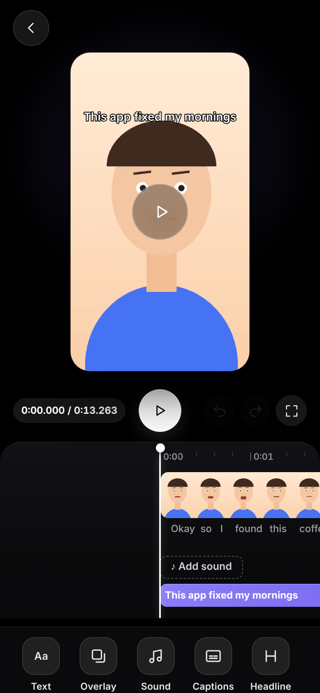
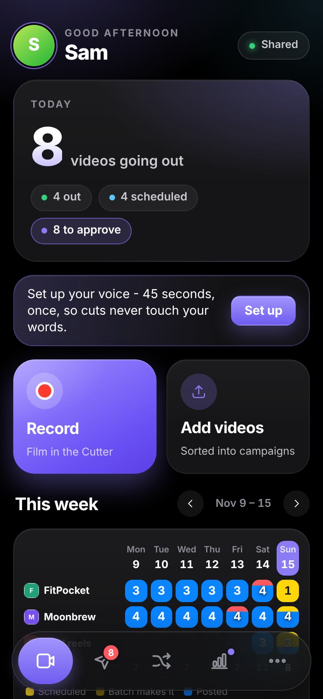
For students and everyone using the CutterEvery name, account and number in the screenshots is made up.
What the Cutter does
The Cutter is an app on your phone that turns raw takes into finished UGC videos and posts them for you. You film; it does the editing, the captions and the posting, and then tells you what is working.
1. FilmIn the Cutter, or add videos from your camera roll.
2. It editsPauses and "um"s out, captions, headline, logo, zooms.
3. You checkLook over the captions and the cut, then Approve.
4. It postsTo your accounts, at good times, through Postiz or Buffer.
5. It learnsViews, best hours and best hooks, so you make more of what works.
Your talking videos
Add a take and the Cutter listens to it, puts it in the right campaign, cuts the silences and the "um"s, writes word-by-word captions and adds the brand's headline and logo. You check, approve, and it goes out.
Campaigns
One per brand: its name, logo, the look of its videos, which of your accounts it posts to, when, and how captions are written. Set it once; every video follows it.
Batches
Film a handful of clips once - reactions, hooks, product shots - and the Cutter mixes them into many different videos and posts a set number every day, by itself, until every mix is used.
Posts
Everything on its way out: what waits for your OK, what is scheduled, what went out, and what didn't (it tries again by itself).
Analytics
Views per video, the best hours to post, which headlines, reactions and songs do best, and accounts that suddenly stopped getting views.
On your phone
Videos are made on the phone. Only the finished video goes out, to your own posting service. Your campaigns are backed up to your login.
Tip: Install the Cutter on your Home Screen (in Safari: Share → Add to Home Screen) and open it from there. Notifications only work that way on an iPhone, and the app keeps working with no signal.
Contents
Quick start - five things on day one
1Getting startedSign in, the tabs, posting keys, your voice, recording
2Simple cuttingSilences and "um"s out, captions, the caption check, the edit screen, Cut only
3Campaigns and the BankBrand, look, headlines, posting rules, captions per kind of video, accounts
4PostingTo approve, scheduling, missed posts, Edit again, New post, limits, Buffer
Owner marks what only the main login sees (and the logins it turns those features on for). Automatic marks what the Cutter does by itself.
Quick start: five things on day one
Do these once, in this order, and you can post your first video today.
Sign in and put the Cutter on your Home Screen
Open the link you were given, type your login and password (or choose your password if you got a one-time sign-in link). Then, in Safari: Share → Add to Home Screen, and from now on open the Cutter from that icon.
Connect posting
More → Settings → Posting → Set up. Pick Postiz or Buffer, paste its API key, paste your Anthropic (Claude) key, tap Connect. Your keys stay on the server, never on the phone. Then turn Notifications on in the same card.
Set up your voice (45 seconds)
Tap Set up on the Videos tab. Stay quiet for 3 seconds, read the text out loud, say your "um"s, take a breath. Use the mic you film with. From then on the Cutter never cuts into your words.
Make your first campaign
More → Campaigns → New campaign: the brand's name, the brand name as you say it, its logo. Then open its Posting: tick the accounts it posts to, pick times (or random times), choose who approves, and paste the brand's caption rules and hashtags.
Film or add a video, check it, approve it
On Videos, tap Record or Add videos. When it says Check captions, go through the questions, look over the captions and the cut, and tap Approve. It is made on your phone and goes to Posts - approve it there and it posts at its time.
Then: once you have a brand with several clips, set up a Batch (section 5) and let it post every day by itself.
1
Getting started
Signing in, finding your way around, and the three things the Cutter needs from you once: your posting keys, your voice, and a first video.
Sign in
The Cutter is private: nothing shows until you sign in, and your campaigns are kept on your login so they are backed up and the same on every phone you use.
How
Type your login and password, tap Sign in.
Got a one-time sign-in link? Open it and choose your password. The link works once, within 48 hours.
By itself
You stay signed in, even with no signal. A login made with a link works on up to 3 phones (Safari and the Home Screen app count as two).
Tips
5 wrong passwords lock the login for 30 minutes.
Need a 4th phone? Ask the owner to remove an old one (Settings → People).
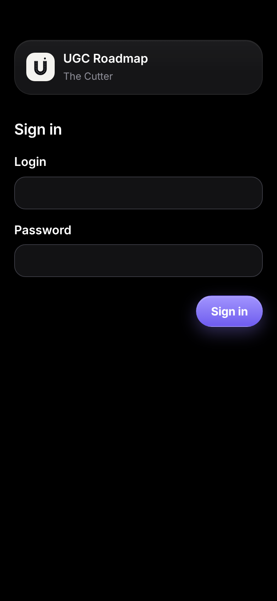
The sign-in page
The Videos tab and the tab bar
Your home: today's numbers, your videos, and the tabs for everything else.
What you see
Today: how many videos go out today - out, scheduled, to approve, failed. Tap it to open Posts.
Record and Add videos.
This week and your campaigns (next pages).
Your videos, each in a row, under them.
The tabs
Videos · Posts (the red number = posts to approve) · Batch · Analytics (a dot = a suggestion for you) · More (Campaigns, Formats, Motion graphics, Warm-ups, Bank, Settings, Cut only).
Tip
The chip at the top right says whether your setups are backed up ("Shared"). Tap it if it says "Not synced".
Videos (dark look)
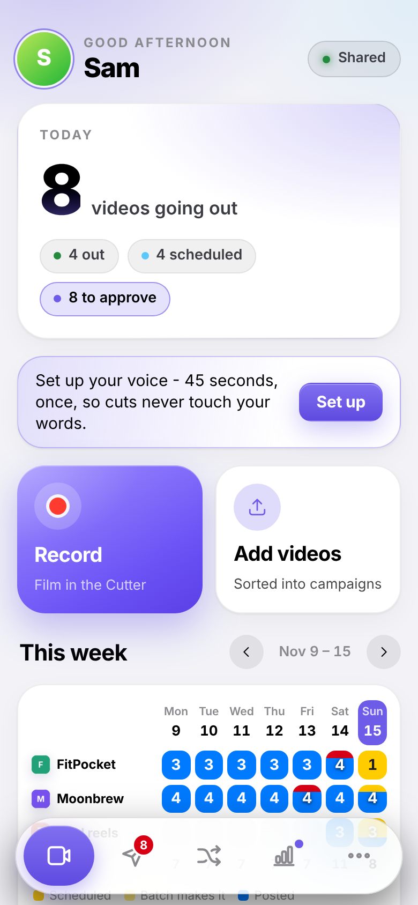
The same in the light look
This week
One look tells you if every campaign got its posts this week - the thing brands pay for.
How to read it
A line per campaign, a box per day.
Blue posted · yellow scheduled · pale yellow the batch will make it · purple waiting for your OK · red didn't go out.
Tap a box for that day's details; ‹ › for other weeks.
By itself
Refreshes every 5 minutes and whenever you come back to the app.
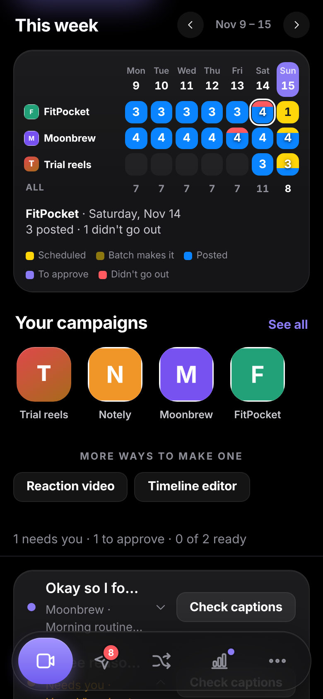
A day tapped: its details under the grid
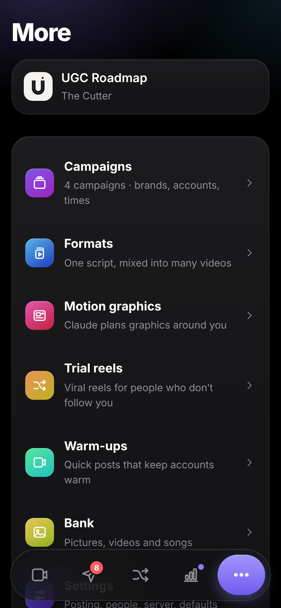
More: everything you set up once
Connect posting once
The Cutter posts through your own Postiz or Buffer, with captions Claude writes. Without this, finished videos stay on your phone.
How
More → Settings → Posting → Set up (or Change keys).
Choose Postiz or Buffer. Postiz: Settings → Public API → copy the key. Buffer: Settings → API.
Paste your Anthropic API key (console.anthropic.com → API keys).
Tap Connect.
Common mistakes
Use your own keys, never a friend's: the Cutter posts to whatever accounts that key holds.
Leave "Send finished videos from this phone" on, on the phone you film with.
Settings → PostingYour keys
Your voice 45 seconds, once
The cut is only as good as the Cutter's idea of where your words end. Measuring your voice once means it never clips a word, in your room, with your mic.
How
Tap Set up on Videos (or Settings → Your voice).
Pick the mic you film with, tap Start.
Stay quiet → read the text out loud, pausing where it says → say your "um"s → one breath.
Done.
By itself
Each video uses the voice it sounds like. If your videos start to sound different (a new mic), the Videos tab asks you to add a voice.
Tips
Do it where you film, with the same mic.
French? Tap Lire en français.
Scroll a little to reach Done reading under the text.
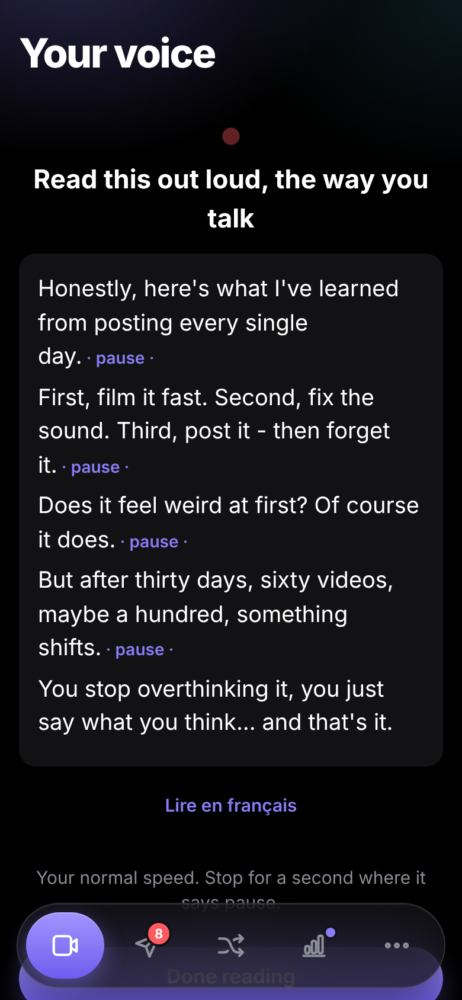
Read this out loudDone: your room and your voice measured
Record in the Cutter
Filming inside the Cutter skips the camera roll and the picker - the take goes straight to editing.
How
Tap Record.
Tap the red button to record, again to pause. Record several parts if you like; ⌫ deletes the last one.
Double tap to flip the camera, pinch to zoom, ⚡ for light.
Tap ✓ when you are done.
By itself
The parts are joined into one video, the back camera's footage is steadied when it helps (Steady switches it off), and the video opens for its caption check as soon as it has been listened to.
Tip
Allow the camera and microphone for the Cutter in the iPhone settings if it asks.
The camera
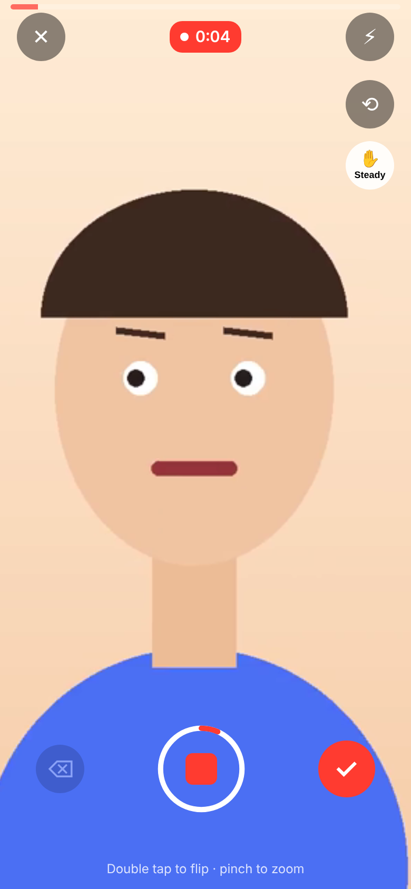
Recording
2
Simple cutting
From a raw take to a finished talking video: the Cutter does the edit, you look it over, and it posts. This is the part you will use every day.
Add videos - they sort themselves
Drop in the whole day's takes at once. You never pick a campaign for each one.
How
Tap Add videos and pick all of today's takes.
Each gets a row: "Waiting to be listened to", then "Listening… 40%".
By itself
Listens to each video and puts it in its campaign and angle from what you say (the brand's name, the angle's words).
A video with no talking becomes a reaction: kept whole, music only.
Two takes filmed seconds apart: "Join them?"
A wide video: "Cut it and make 9:16, or only make 9:16?"
Tips
Needs you means it wasn't sure of the angle - open the row and pick.
iPhone: in the picker tap ⋯ → Options → Format → Current, so videos arrive at full quality without a long wait.
Two videos: one ready to check, one that "Needs you"
Check captions: the questions, then the quick check
A wrong caption or the wrong campaign is the one mistake a viewer (or a brand) notices. This is your 30-second check.
How
Tap Check captions on the row.
Check Goes to, the Headline and its look, the Music, the pictures and clips. Tap Next.
The quick check shows only what may be wrong, one card at a time: Good, Fix or Undo change.
Approve - or Timeline editor for more.
By itself
Claude reads every video's captions once and fixes what it misheard (brand names especially). Each "um" it cut is listed so you can put it back.
Tip
"Captions on the hook too": off, captions start after the headline, so the hook stays clean.
The questionsThe quick check
The edit screen (Timeline editor)
Like TikTok's editor: fix the cut, change a clip's speed, add your own words, pictures, videos and sounds - before the video is made.
How
Slide the timeline to move through the video; pinch it to zoom.
Tap a clip: drag its white arrows inward to trim, outward to bring back what was cut. Split, Delete, Speed (0.5× to 3×, your voice keeps its pitch).
Undo / Redo are next to the timer.
By itself
The captions follow every change you make to the cut.
Tip
Talking too slowly? Tap a clip → Speed → 1.25×.
The timeline and its toolsA clip tapped → Speed
Text, Overlay, Sound and Headline
Your call to action, a screenshot of the app, a whoosh on the reveal - the things that make a talking video feel produced.
How
Text: type your words, pick White box / Outline / Snapchat, drag and pinch them on the video. Their bar on the timeline sets when they show.
Overlay: a photo or video from your phone or the Bank, placed at the playhead.
Sound: a sound effect, a song from the music bank or a sound from your phone.
Headline: drag it, pinch it, Put back.
By itself
A headline you move stays there for that angle's next videos.
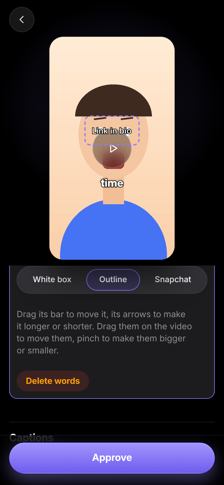
Text: words on the videoOverlay: from the phone or the Bank
All the captions at once
For a longer video, read every caption in one list and fix any line by typing.
How
Tap Captions in the toolbar: a see-through sheet slides up over the video. Drag its handle for half or three quarters of the screen.
Tap ▶ beside a line to hear it; type to fix it.
Check captions with Claude - it shows what it costs (about 2¢).
Under the list: caption position, style (One word / Highlight / Phrase) and size.
By itself
Your last caption style and size become the default for the next videos.
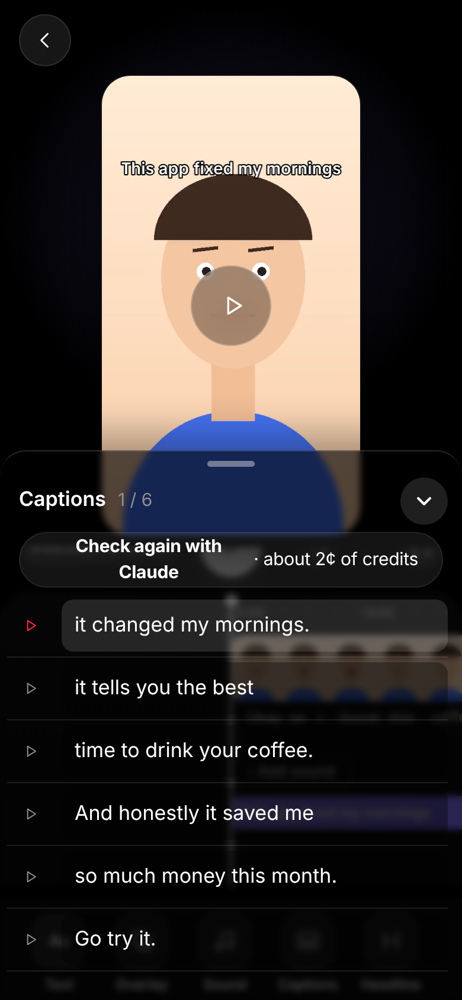
The caption sheetMade: 0:18 → 0:13, logo and picture placed
Approve: made on your phone, then sent
Approving is the last thing you do. The rest - making the video and getting it to your accounts - happens by itself.
By itself
Approved videos are made one at a time, on your phone (keep the app open with the screen on - about half a minute each).
Each finished video goes to Posts with a caption Claude writes from what you say, for the campaign's accounts and times.
The row shows what was cut: "0:18 → 0:13 · 1 pause cut · 1 "um" · logo at 0:03".
A made video stays editable until it goes out (and 2 hours after) - see Edit again.
Common mistakes
Closing the app while videos are being made: they wait and carry on when you open it again.
"Not sent to Postiz: no accounts are picked" - open the campaign's Posting and tick its accounts.
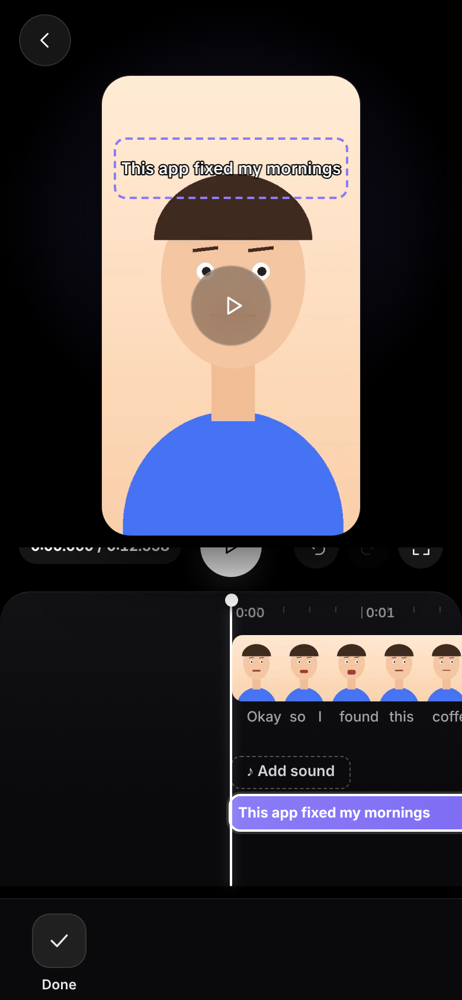
Moving the headline
Reaction videos and the Timeline editor
Two more ways to make a video, under More ways to make one on Videos.
Reaction video
Pick a reaction campaign, type a headline, choose the product clip, then add your reaction clips: each becomes its own video - your reaction, then the product.
Timeline editor
Add several clips in order, then choose: Post it (nothing cut by itself, you edit), Cut the silences (cut as usual, then the editor), or Just keep it (made but not posted).
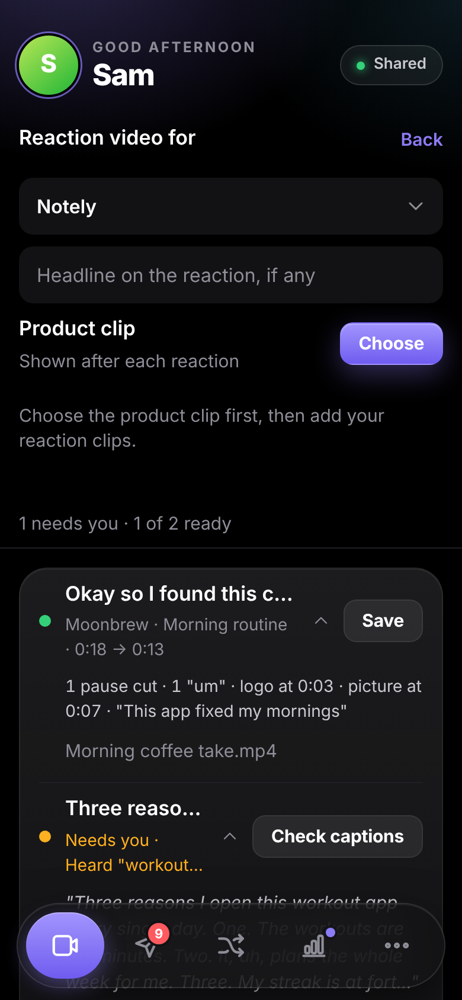
Reaction videoTimeline editor
Cut only
Just the silences out, nothing else - for a video that isn't for a campaign. Nothing is posted.
How
More → Cut only.
Pick the Pacing: Natural, Balanced or Tight (Fine-tune for the exact numbers).
Add videos, then Save video or Share.
Tips
"Cut "um"s and stumbles" and "Write captions (.srt)" work in English.
Words getting clipped? Lower the silence level in Fine-tune.
Leaving Cut only clears its finished videos - save them first.
Cut only0:18 → 0:12, 8 pauses removed
3
Campaigns and the Bank
A campaign is a brand: how its videos look and where, when and how they are posted. Set it up once and every video follows it.
A campaign: brand and logo
The brand's name as you say it is what the Cutter listens for: it sorts your videos by it and brings the logo up when you say it.
How
More → Campaigns → New campaign.
Campaign name; Its videos: Talking head, or Reaction + product.
Brand name, as you say it - one spelling is enough.
Logo: a PNG with a clear background looks best. Save campaign.
By itself
Every campaign has a General angle for its videos that fit no other angle.
A campaign: its angles and posting
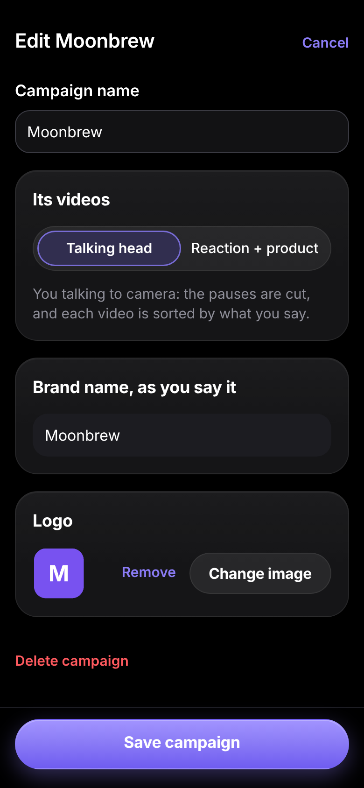
Brand & logo
Angles: the look of each kind of video
One brand, several proven kinds of video ("morning routine", "money saved"): each angle has its own headline, logo spot, pictures, sounds and effects.
Look
Recognise it by: words that put a video in this angle.
Headline: your text, or Write it from the video (Claude writes one from what you say, in the style of your past headlines). Where, style, size, seconds on screen.
Logo: where, how big, how long, when you say the brand.
Pictures · Sound · Effects · Clips
A picture that comes up when you say its words; background music and sounds (whoosh on the brand); zooms (punch-in at cuts, push-in on the hook); a video before, after or in the middle of every video.
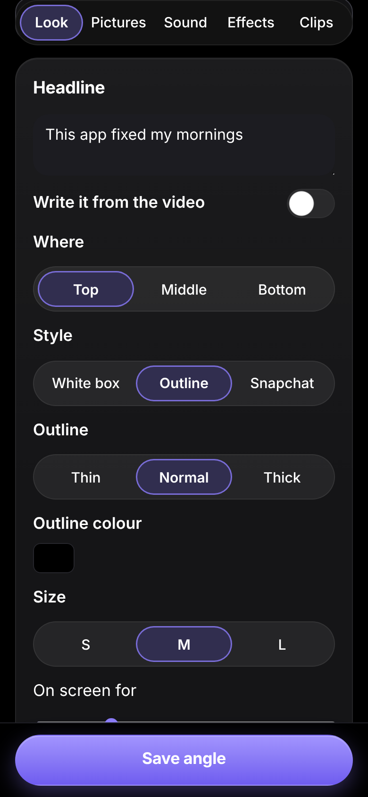
An angle's headline
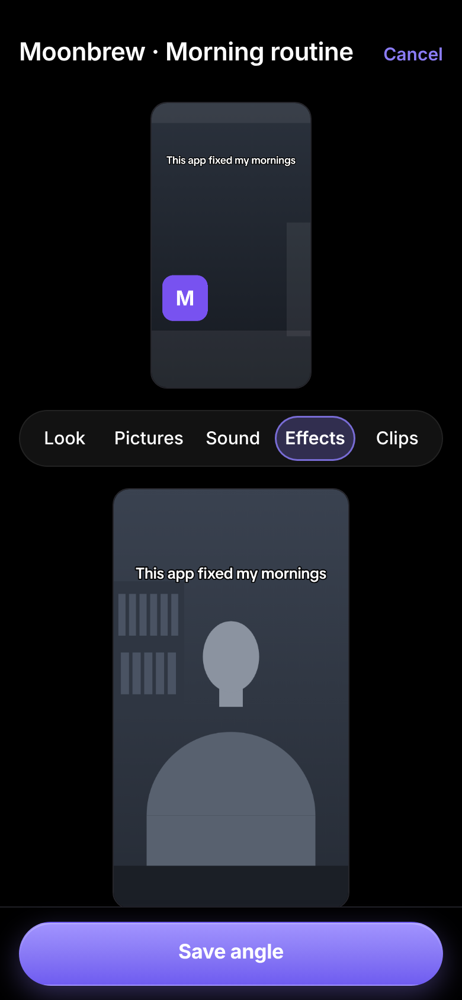
Effects, with examples to play
Posting: accounts and times
Where and when this brand's videos go. Accounts and times are yours alone, even if a friend shares the campaign.
How
Open the campaign → Posting.
Tick Your accounts. Added one in Postiz? Look again.
Most posts a day: the brand's limit, if it has one.
Your times: your own times, or Random times between two hours, N a day.
By itself
Each video takes the next free time. Random times change every day and stay 30 minutes apart. A new account can be added to videos already made, without anything posting twice.
Your accountsRandom times
Who approves, and the caption
Some brands want to see each video first; some pay only if you submit fast; all have caption rules.
Before it posts
I approve: it waits in Posts for you.
Straight away: scheduled as soon as it is ready.
Brand approves: you send it to the brand, then tap Brand approved.
Remind me to submit it when it goes live - for brands that pay within 2 hours.
Caption
Claude writes it from what you say, following the brand's caption rules and hashtags - or I paste it (a tracking caption).
Tip
Changed the hashtags? Tick "Add the hashtags to posts already made".
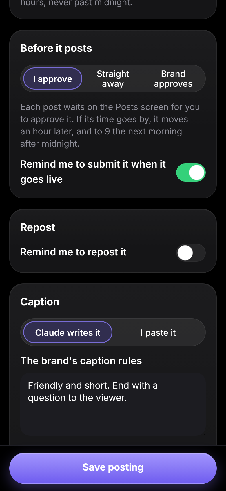
Before it postsCaption rules and hashtags
Captions per kind of video
On platforms that pay per post type (a talking video counts as "advanced", a reaction as "basic"), the right tag on the right video is how you get tracked and paid.
How
Posting → Added to the caption, by kind of video: one line for Talking head videos (advanced), one for Reaction videos (basic). Hashtags, a line, or both.
By itself
Each video's kind is worked out from what it is; the line is added once, never twice, above the hashtags.
Instagram location
Paste the place's Facebook page link to tag every Instagram post with it (or set one for all campaigns in Settings). Postiz doesn't pass it on to Instagram yet; it will show once they do.
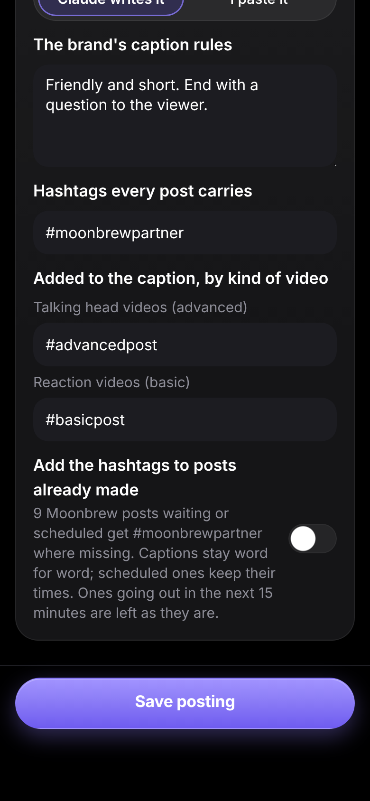
By kind of video
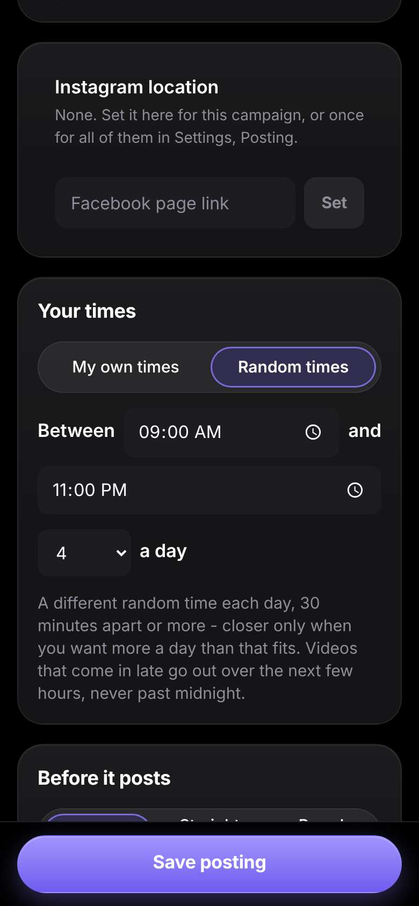
Instagram location
Stop or end a campaign · the Bank
Stop or end
Stop all posts: nothing of this brand goes out (other campaigns untouched).
End campaign: stops its posts and takes its accounts out of Postiz so they stop counting toward your Postiz limit - you see which go, and which stay and why, before anything happens.
The Bank (More → Bank)
Pictures and Videos that pop up when you say their words, and the Music and Sound effects every picker uses - shared on every phone of your login.
Tip
Name each song so you recognise it later; tap ▶ to hear it.
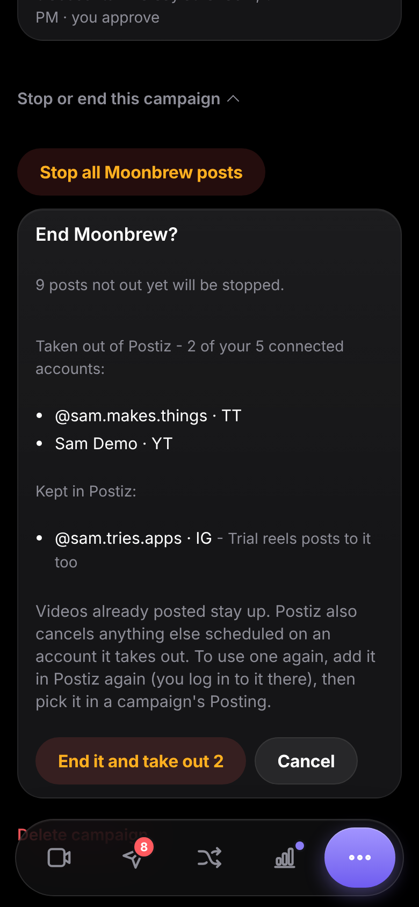
End campaign: what goes, what staysThe Bank
4
Posting
The Posts tab is everything on its way out: what waits for you, what is scheduled, what went out and what didn't.
To approve
Always at the top: the only posts that need you.
How
Read the caption (fix it right there), Watch the video, then Approve - it goes at its time. Post now sends it at once.
Approve all for a whole batch.
More options: Approve, post later · Change time · Add music · Save video · a different caption for one platform.
Reject: it won't post (a batch makes another in its place).
By itself
Approve 3 videos of a batch and the rest of it is approved for you. A post whose time passes while it waits moves an hour later (9 AM the next morning after midnight).
To approveMore options
Add music after, and brand approval
Add music
More options → Add music: pick a song, ▶ to hear it, Add music & approve. A new version replaces the old post - nothing posts twice.
Brand approves
For a brand that checks first: Save video, send it to them, and when they say yes tap Brand approved.
Add music
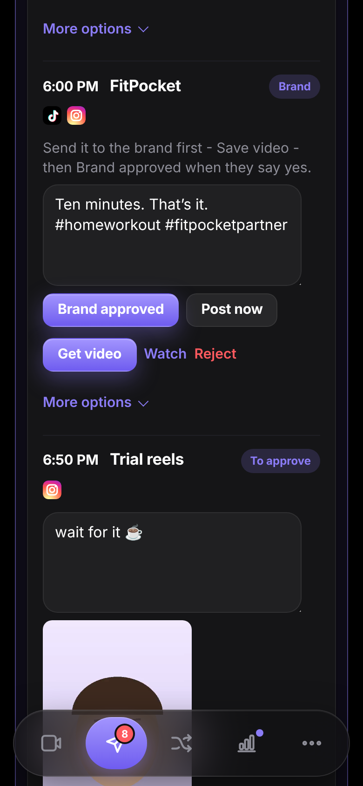
Brand approves
Scheduled, Just posted, Didn't go out
See every day ahead, check what went out (with its views and links), and catch anything that failed.
How to read it
A block per day; Today and Tomorrow open. Chips: Scheduled · Going out · Posting again · Posted · Partly · Not posted.
Tap a post for its accounts, links and caption. Take back returns it to To approve.
Just posted: the last 3 hours, with views.
Didn't go out (folded at the bottom): Post it myself (save the video, copy the caption) or Let the Cutter post it.
By itself
A post that missed an account is posted again at the next free time, up to twice (YouTube when its daily limit starts over). You get a notification that opens that post.
The days aheadDidn't go out: you choose
Edit again · Select to stop
Edit again
A talking video you made can be opened again - cut, captions, music - until it goes out, and for 2 hours after (then it goes out as a new post). Edit again is on the post. A batch video: change its headline or music.
Select
Tap Select, tick a whole campaign or posts one by one, and Stop them: they are taken out of Postiz and won't go out.
Tip
The filter at the top shows one campaign at a time.
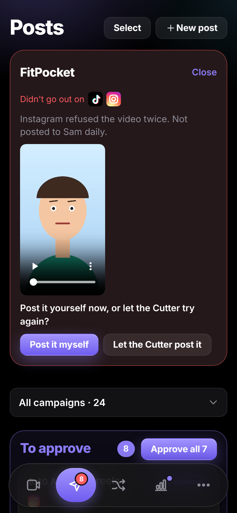
From a "didn't go out" notificationSelect → Stop
New post: finished videos
A video you edited somewhere else, or one the brand sent back: post it through the Cutter with a Claude caption and good timing - no cutting, no approving.
How
Posts → + New post, pick the campaign.
Choose the videos. Claude writes each caption from stills of the video (or paste yours).
Optional: tell Claude something - "I already posted today, post them tomorrow".
When: Post now / Pick a time, or for several: Spread them (N a day) / All now / One by one. Then Post.
Common mistake
"Duplicate skipped" means that video was already posted for this campaign - tap Add it anyway if you mean it.
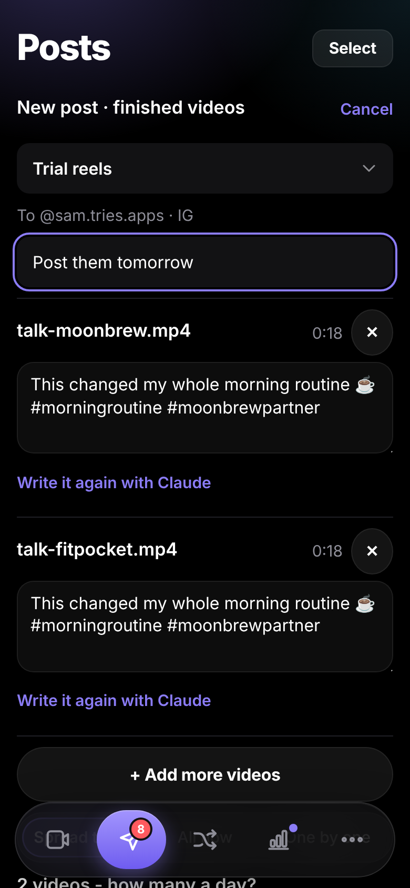
Two videos, captions being written
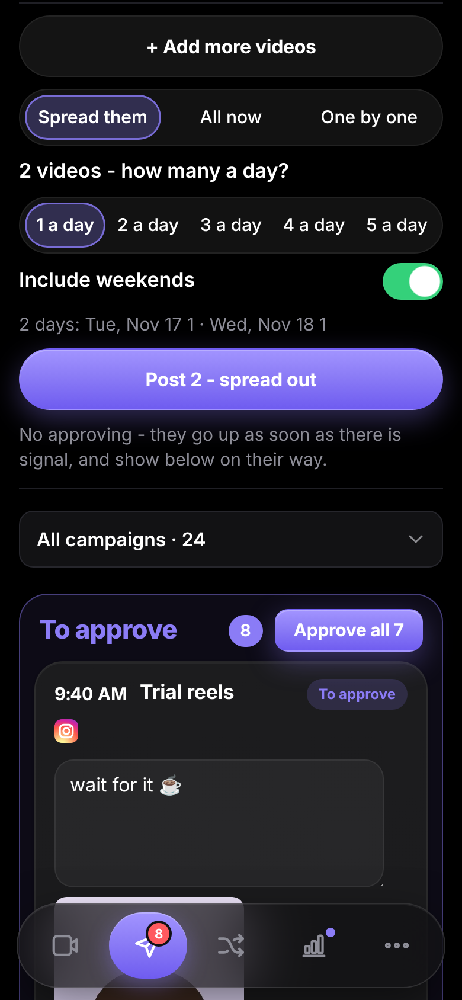
When they go
Pause and daily limits · Buffer backup
Pause and daily limits
Settings → Posting → Pause and daily limits: pause a platform or one account, or set the most posts a day. Held videos wait and go out by themselves once there is room - nothing is lost.
Buffer backup
Paste a Buffer key and your Instagram accounts are backed up: a video Postiz can't take goes through Buffer by itself. Postiz is down hands everything over until you switch it off.
Notifications
Posts to approve, a batch ready, a post that didn't go out, submit and repost reminders, a morning summary, an account that stopped getting views. iPhone: only from the Home Screen app.
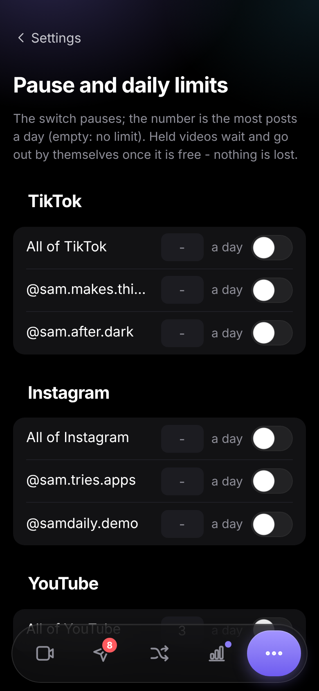
Pause and daily limits
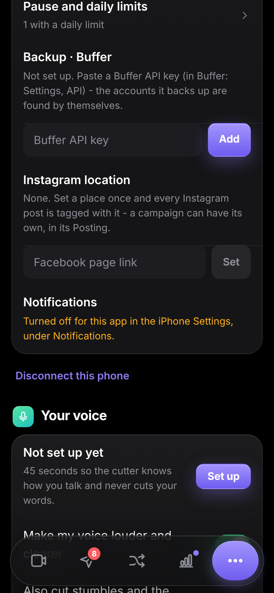
Buffer backup
5
Batches
Film a set of clips once; the Cutter mixes them into many different videos and posts a set number every day, by itself, for as long as the mixes last. One batch per brand.
The status card
One look tells you if the batch is doing its job.
How to read it
Up to date: every day ahead is made. Making videos: with the one being made now. About to make more. Waiting its turn: your own video goes first.
Next 3 days: ready / wanted each day, and what went out.
Make now puts the batch first; Stop; Stop and take out the N scheduled.
By itself
The next 3 days are made whenever the app is open (or day and night on a Cutter server). Times are spread around the clock, more at your best hours.
Tip
On the phone, keep the app open with the screen on while it makes videos (about half a minute each).
Up to dateMaking videos
Formats: the kinds of video in a batch
A brand's batch can mix several kinds of video, each from its own clips - and the ones that get more views get more of the day.
Reaction: you react without a word, then the product. Music only.
Talking head: you talk to the camera (captions, music under your voice), then the product steps.
Green screen: the product full screen, you cut out in a corner.
How
+ Add a format, pick its kind, add its clips. Each card says how many different videos are left. Pause one, or Take out this format.
By itself
Formats take turns evenly; once each has enough views, the better one gets up to twice its share.
Two formatsA reaction format, open
Talking head: drop in, speed, your clips
Film every hook and every product step in one go, drop them all in, and the Cutter files each clip in the step you name in it.
How
+ Drop in clips: pick them all at once.
The checklist: Cut the clips, Zoom, Captions, Music, Headline, Mirror them (remembered).
Check N clips (next page).
Speed 1× to 1.5× for every clip of the format.
Your clips
In the order a video plays them: Hook, then each step with + Add and Cut | Raw - one tap makes every clip of that step cut by the Cutter or kept as you filmed it.
By itself
Clips are made again in the background to match the speed and Cut/Raw ("Making your clips 1.1×… 4 left").
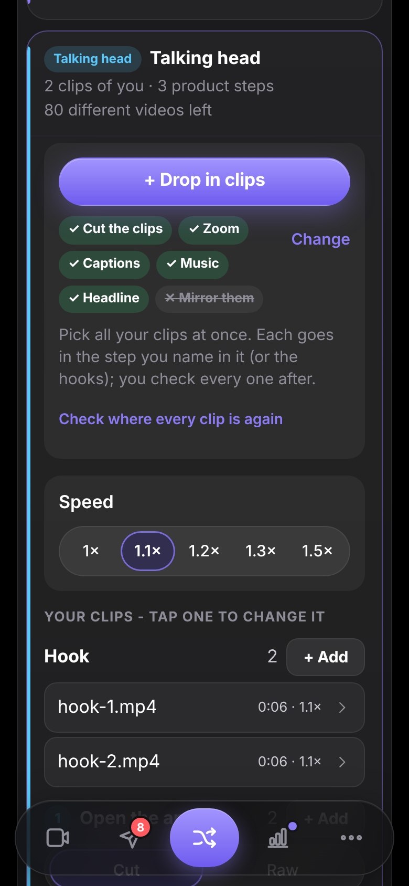
A talking head formatYour clips, Cut or Raw per step
The clip check and the clip screen
Every dropped clip is checked once - where it goes and its captions - before any video uses it.
Clip check
One clip at a time: tap the step it belongs to (or Hook), Mirror, Cut / Raw, fix its captions, Timeline editor to trim it, then Approve & next clip. "Sounds like step 2 · Move it" when it may be in the wrong step.
Clip screen
Tap any clip in Your clips: it plays whole. Big ‹ › for the others, ✕ to close. Length (make it shorter or longer), Cutter Cut/Raw, Speed for this clip, In (move it), Mirror, Captions, Replace, Remove.
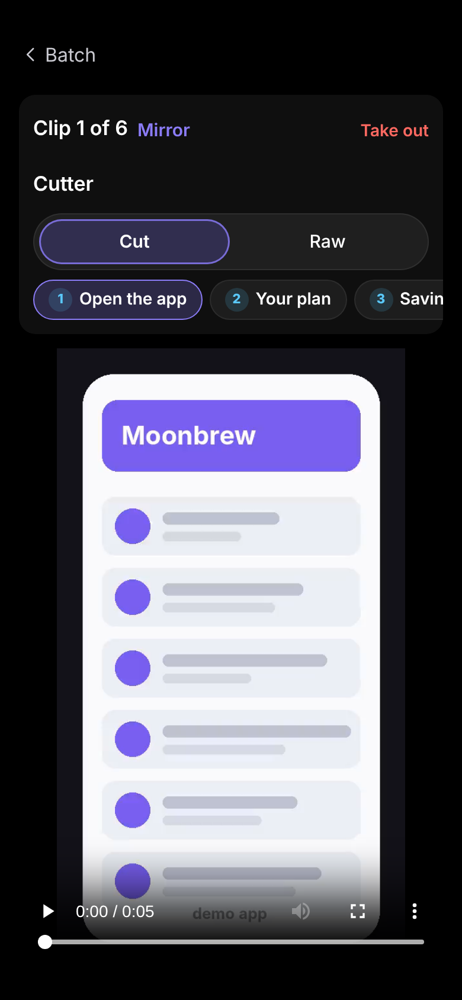
The clip checkThe clip screen
Product steps and words on screen
The product part of every video, in your order: "Open the app", "Your plan", "Savings" - one clip of each step per video.
How
Steps and rules → Names and order: name the steps, ↑ ↓ to order them, + Add step.
Words on screen: tap the phone screen where words go and type; add a picture or video that pops up every time the step plays. It snaps to the middle.
Use each clip once: for brands that don't want clips repurposed.
Tip
On talking heads, a step you talk over shows your captions instead of its name.
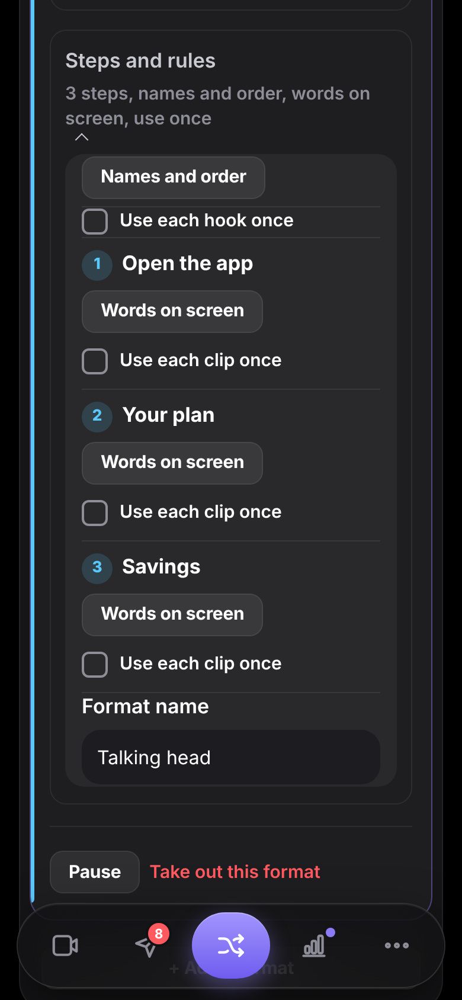
Steps and rules
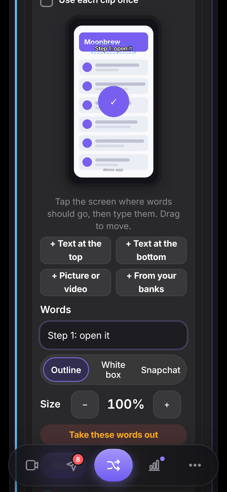
Words on screen
How the videos look: hooks, headlines, captions, music
Hook: White box, Outline, Snapchat - or Claude + X (two logos and an amount a day). Pick several and the videos take turns, in the shares you set with − / +.
Headlines: paste them, one a line - each video gets one.
How the videos look (talking head): headline on or off, music on or off, captions look and Captions height (drag them).
Music: songs for the batch or from the music bank; tap a format under a song to use it there or not.
Hook looks in shares
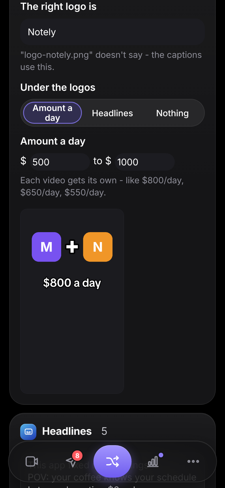
Claude + X
Videos a day, Start, and what's left
The only number you set. Everything else - which mix, which time, which day - the Cutter works out.
How
How often: Every day (Videos a day, up to 48; "More each day" adds one a day) or Some days (tick the days, N on each).
Start: makes the next 3 days now, then keeps going.
Start over: takes out what hasn't gone out, to make it again with your latest settings.
Start anyway (red): makes mixes made before again.
By itself
Change the number any time: the days ahead follow at once, up or down. When every different video is made, the clips are cleared and you are told to film new ones.
Tip
"N variations" at the bottom is how many different videos your clips make - and how many days that lasts.
Videos a day
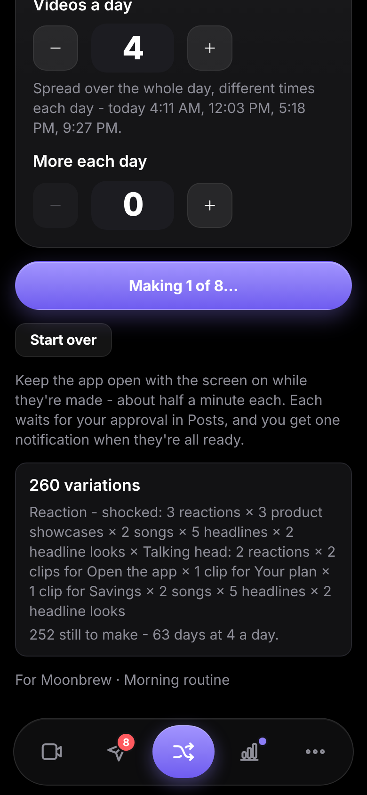
Start and the variations
The Cutter server (optional)
With a Cutter server, batches are made day and night with your phone closed.
Settings → Server: paste the server's address, Connect. From then on every batch is handed to it: its clips go up while the app is open, and the status card says "On the server". Make batches on this phone again takes them back. Ask whoever set your Cutter up whether you have one.
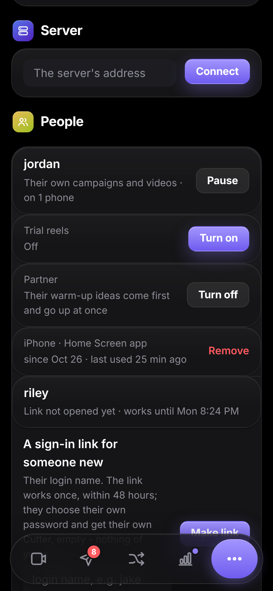
Settings → Server
6
Formats, and One video, new songs
Two ways to get many posts out of little filming.
Formats: one script, many videos
Film the same short script again and again - each line several times - and the Cutter mixes the takes into a month of different videos for the brand to approve.
How
More → Formats → + New format, name it, set its look and clips.
Write the Script: one line each, in order.
+ Takes on each line: your takes of it.
Make N videos: each take of line 1 opens one video, with a take of every other line.
Save all to my phone to send the brand; when they say yes: Over the month, Schedule for the week or Next 5 days.
By itself
No two videos open the same way; it picks the take used least, filmed closest to the opening.
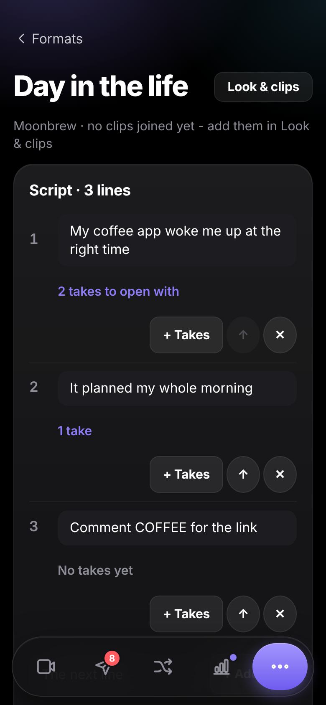
A format's script and takes
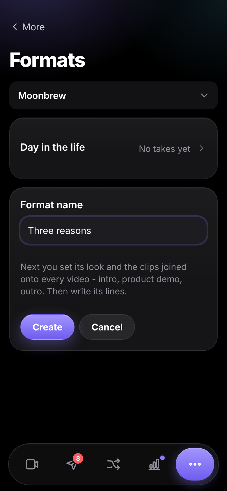
A new format
One video, new songs
A video that did well, posted again with other songs - the picture exactly as it was.
How
Batch tab → One video, new songs → + Add, then Copies of each. Each copy gets another song from the batch's music and takes the batch's next free time. If you talk in it, your voice stays and the song goes quietly under it ("Your voice + song under"), otherwise the song replaces its sound ("Song only"). Stop / Go on per video.
Tip
You can have as many copies as the batch has songs - add songs to its Music first.
One video, new songs
7
Analytics and What works
Your views, read for you from your accounts, and what to do about them. Only campaigns with a batch are shown.
The last 30 days
Is it growing? A line that only climbs, today's new views and your best day.
N videos out in 30 days with the share that went out, and Posted / Scheduled / To approve / Didn't go out.
Accounts that stopped getting views
"About 40 views a video lately - it usually gets 2,800": most often a shadowban. Check it in its app. Pause holds its videos; Post an extra warm-up on it? helps it recover.
By itself
Views are read a day, three days and a week after each video goes out.
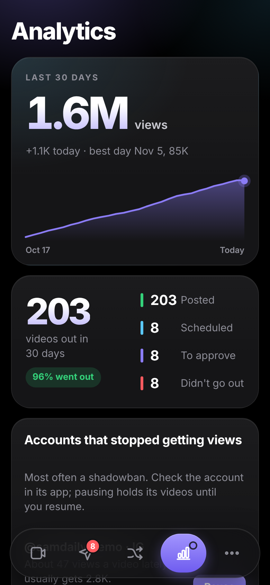
The last 30 daysAn account gone cold
When to post · Ready for more a day?
When to post
A heat map of your best hours by day. Batch times crowd toward them (up to twice as many), never back to back. Tap an hour for its number; Turn off to spread evenly again. It needs 150 videos with views to learn.
Ready for 5 a day?
Each batch campaign shows views per video and the trend. When views go up a fifth (or reach the number you set), it suggests one more a day; when they fall, one fewer. Yes changes the batch at once.
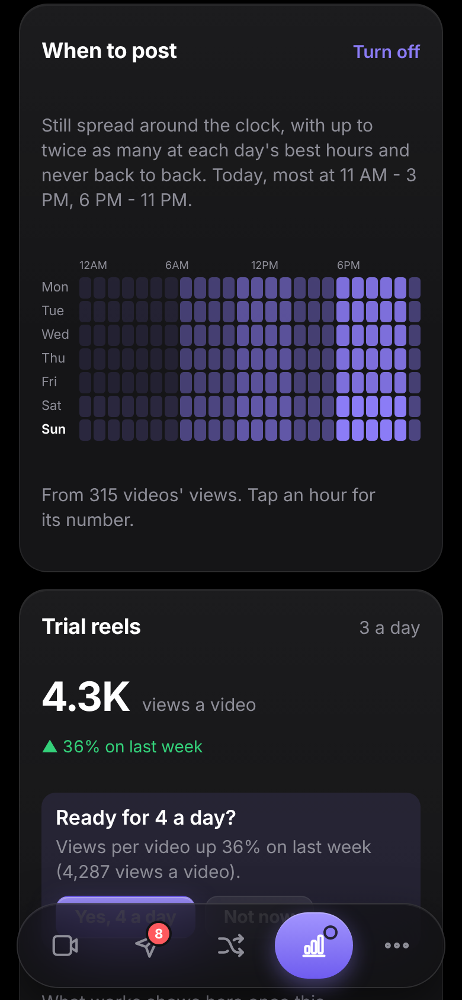
When to post
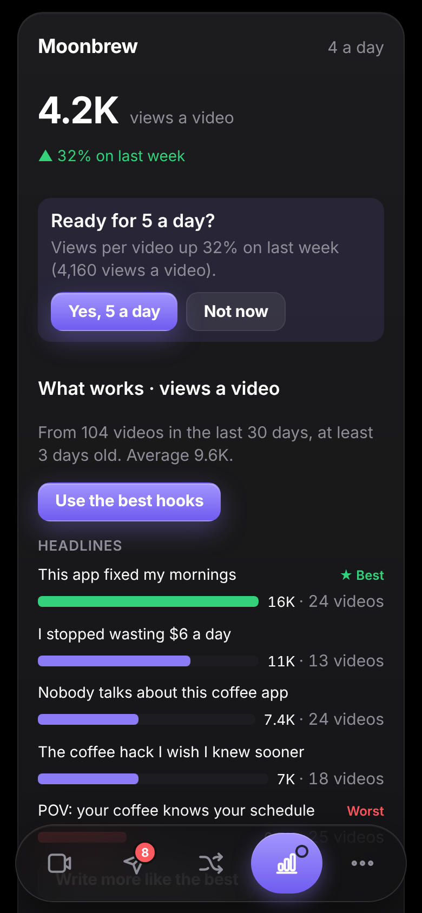
A suggestion
What works
The fastest way to grow a batch: make more of the headlines, reactions, songs and looks that get the most views.
How
Bars per headline, reaction, song and headline look: ★ Best and Worst, views a video and how many videos.
Use the best hooks: the best ones come round twice as often - and follow the numbers as they change. Back to even undoes it.
Write more like the best: Claude writes new headlines in the style of your best; Add the ones you like.
Tip
Wait until videos are 3 days old: a 1-day-old video hasn't got its views yet.
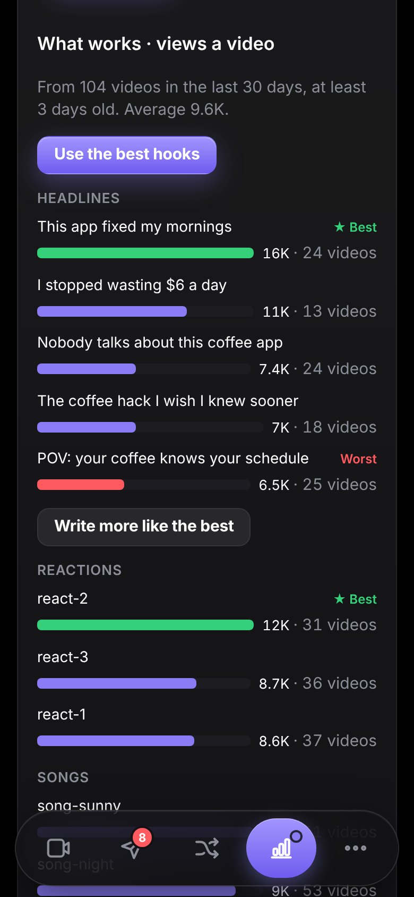
What works
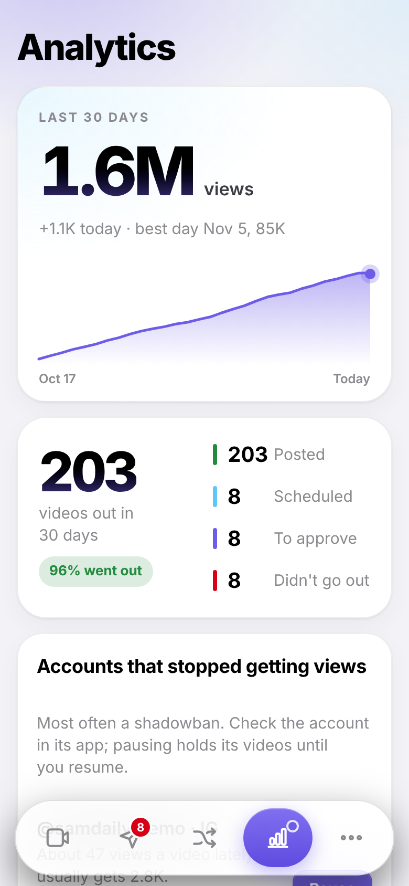
Analytics in the light look
8
Trial reels Owner
For the owner's login, and the logins the owner turns it on for in Settings → People. Not shown to anyone else.
A reel that went viral, again and again
Instagram Trial Reels are shown only to people who don't follow you. The Cutter makes copies of a reel that did well - its words moved or reworded, a touch brighter or darker - and posts them as trial reels.
How
More → Trial reels → Start a Trial loop.
Not talking - a viral reel: pick the viral reel and the same video with no text and no sound, together. Or Talking - my own video with songs from your music bank.
Pick the Instagram account, tap Start.
Set Videos a day.
By itself
Claude reads the reel's words and writes rewordings; copies are made a few days ahead and spread around the clock. Approve 3 copies of a reel and the rest go by themselves. Instagram's daily trial limit is learnt and kept to.
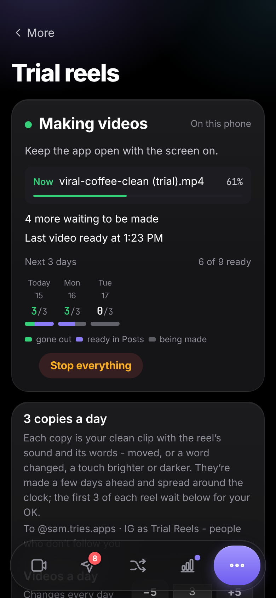
A Trial loop, making copiesStart a Trial loop
Instagram's rules: trial reels need a public professional account allowed in recommendations. If Instagram refuses them, nothing more is made until one goes through. Never through Buffer: it would post them as normal Reels to your followers.
9
Motion graphics and Warm-ups
Motion graphics
For your own brand's talking videos: Claude plans graphics around what you say - cards, numbers counting up, lists - each landing on its word.
How
More → Motion graphics, pick a look (or let Claude pick), say what you want if anything, pick a talking video.
It is cut like on Videos; check the captions.
The plan: Play to see it over your video; tap a moment to change its words or take it out; tell Claude what to change.
Make the video, then Save / share (or post it with New post).
Tip
Only your words go to Claude, never the video. Numbers you say make the best graphics.
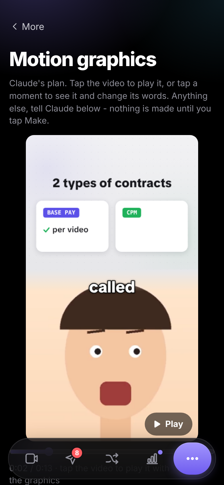
The plan, played over the video
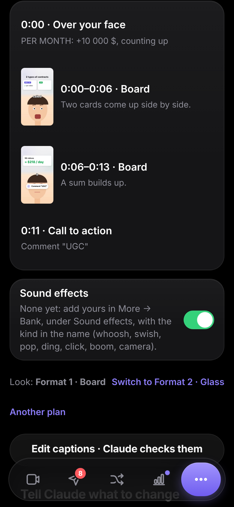
Its moments, each one editable
Warm-ups
Short no-talking posts (about 7 seconds, a set headline and sound) that keep an account warm between its batch videos.
How
Read an idea (how to film it, its headline, its sound), then Film it - or Film N in one go. The sound plays while you film and it stops by itself.
Where they go: turn warm-ups on per campaign, N a week, which categories.
+ Idea: share an idea with everyone. Owner approves new ideas and categories.
By itself
Each goes out once, at the account's best hour, waiting for your OK; an idea never twice on a campaign; an account with nothing posted for a day gets one by itself (you still approve it).
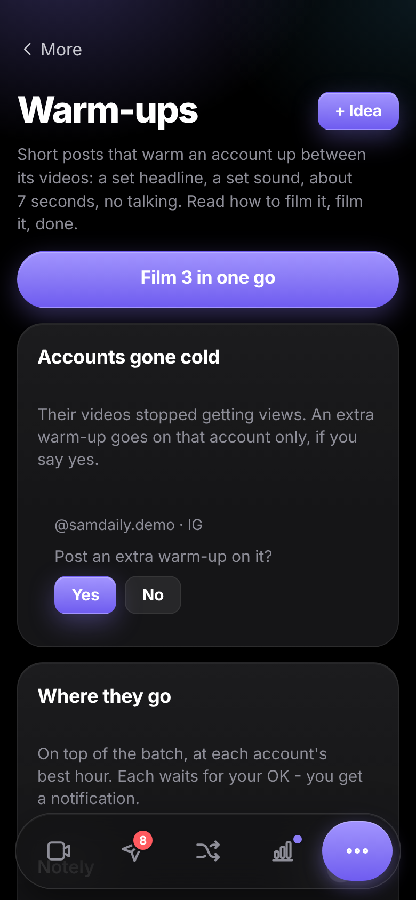
Warm-ups
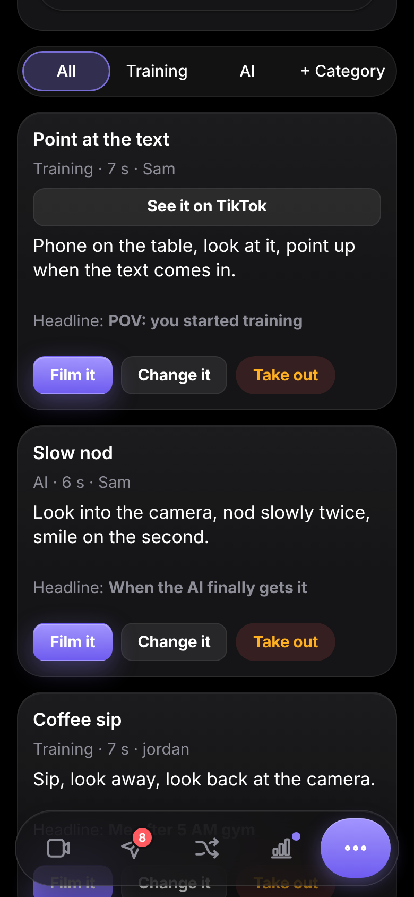
An idea
10
Settings
More → Settings. Most of it is set once; the defaults are right for most people.
Voice, cutting, captions, effects
Your voice: your voices (Automatic picks the right one, or pin one), + Voice, "Make my voice louder and clearer".
Cutting: Pacing Natural / Balanced / Tight; Wide clips Fit (whole, black above and below) / Fill (cropped) / Off; "Also cut sounds that aren't speech".
Captions: on or off; leave out punctuation.
Default effects: Off / Subtle / Strong for angles with none of their own.
Tip
Words getting clipped? Try Natural pacing, and make sure your voice is set up for the mic you use.
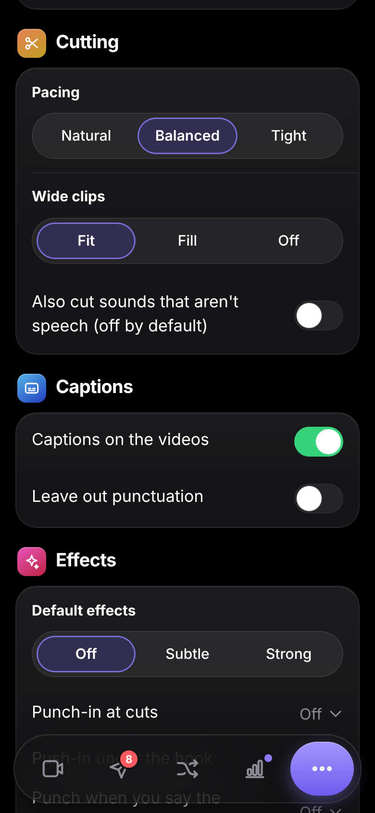
Cutting
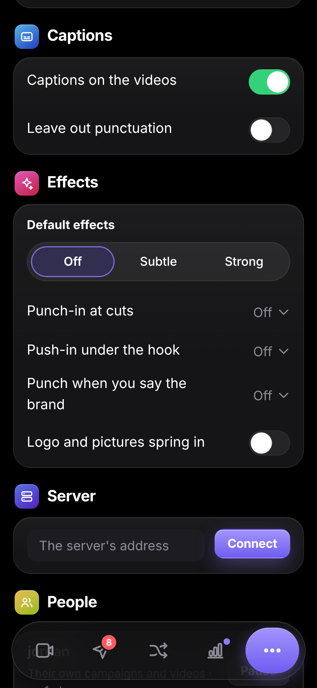
Captions and effects
People Owner · Look
People
Make a one-time sign-in link for a new person: type their login name, Make link, Send. Their Cutter starts empty - nothing of yours. For each login: their phones (Remove), Pause, Trial reels on/off, Partner (their warm-up ideas go up without waiting).
Look
Dark or Light, and Show tips - the grey hints under every setting, off by default.
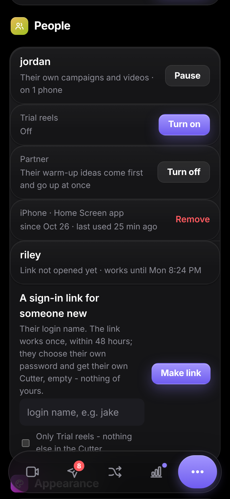
People
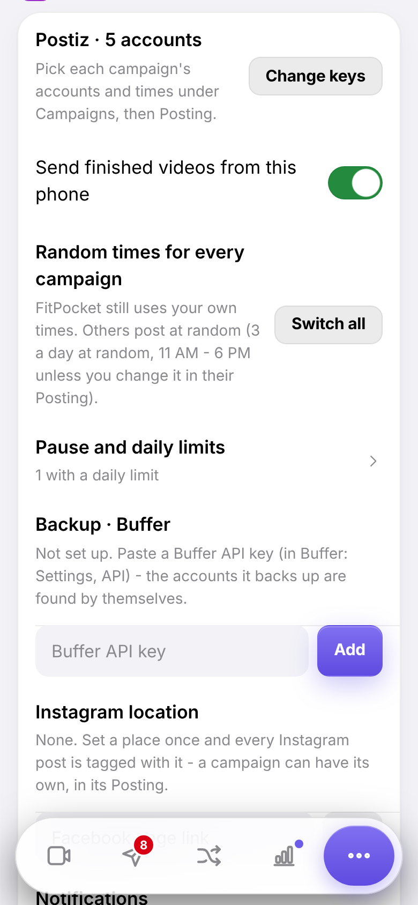
Settings in the light look
Troubleshooting
What a message means and what to do. Most problems fix themselves - the Cutter tries again on its own.
"This browser can't make video yet"
The Cutter needs iOS 26 / Safari 26 or newer, or Chrome. Update the iPhone.
Picked videos take long to arrive, or don't show up
In the picker tap ⋯ → Options → Format → Current. Check free space in Settings → General → iPhone Storage.
"Another Cutter tab is working on the videos"
The Cutter is open twice (Safari and the Home Screen app). Close one.
"The phone's video maker stopped answering"
That is the iPhone, not the video. Restart the iPhone, open the Cutter: your videos carry on where they were.
"The phone ran out of memory… starting again"
Nothing to do: it restarts itself and carries on. Close other apps if it keeps happening.
Videos aren't being made
Keep the Cutter open with the screen on - it only makes videos while it is open (unless you have a Cutter server).
Words are clipped at the end
Set up your voice with the mic you film with; try Pacing → Natural.
A caption is wrong
Fix it on the caption check (Fix, or type in the caption sheet). Brand names: make sure "Brand name, as you say it" is right in the campaign.
"Not sent to Postiz: no accounts are picked for this campaign"
Campaigns → the campaign → Posting → tick its accounts. Then Send to Postiz on the video.
"Posting is not set up on this phone"
Settings → Posting → Set up, with your own keys.
A post "Didn't go out"
It posts again by itself at the next free time, up to twice. Or open it: Post it myself / Let the Cutter post it. If an account was disconnected, reconnect it in Postiz.
"Duplicate skipped"
That video was already posted for this campaign. Add it anyway only if you mean to post it twice.
No notifications
Open the Cutter from the Home Screen icon, then Settings → Posting → Notifications → Turn on. If it says they're off, allow them in the iPhone's Settings → Notifications.
Batch: "Waiting its turn"
Your own video is being made first. Make now puts the batch next.
Batch: "Every mix of these clips was made before"
Add new clips - or Start anyway to make the same mixes again.
Batch: "The server went quiet"
Your Cutter server stopped answering; it usually restarts by itself. If it stays, tell whoever runs it.
"This login is on 3 phones already"
Ask the owner to remove a phone you no longer use (Settings → People).
Something looks old after an update
Close the Cutter fully and open it again: the new version comes in then. "Updating the Cutter…" means it is doing it safely.
"Something went wrong on this page"
Tap Reload. Videos that were waiting come back; the details were sent so it can be fixed.